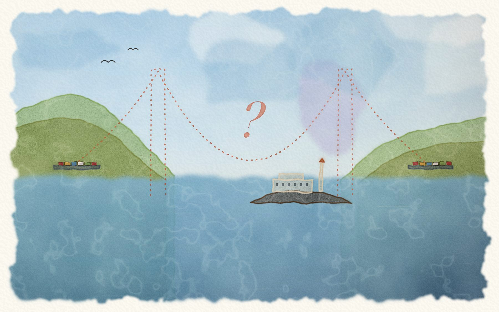

Tap the map to zoom in or out
A bedtime story in eleven nights · from Daddy in San Francisco
Being the true account of two stowaways, one very worried Daddy, and the night somebody stole the Golden Gate Bridge.

Tap the map to zoom in or out
Chapters normally open one per night. You can open them all on this device to read ahead or catch up.